בר מצווה בכותל
בר מצווה בכותל, עם מקום לכל המשפחה
העלייה לתורה, המפגש המשפחתי והרגעים שביניהם. נתכנן יחד את צילום הסטילס לפי סדר היום שלכם והזמן העומד לרשותכם.
כדי להתאים לכם הצעת מחיר
- תאריך האירוע ושעת התפילה או הקריאה בתורה
- נקודת המפגש והזמן שתרצו להקדיש לצילומי משפחה
- מקום קבלת הפנים או הסעודה, אם יש המשך אירוע
- משך הצילום המבוקש
צילום בכותל מתומחר לפי היקף ותוכנית היום. יאיר מצלם סטילס בלבד; וידאו, אם נדרש, בהפניה ובהזמנה ותשלום נפרדים מול צלם עצמאי.
גלריית צילומי בר מצווה בכותל המערבי – תיעוד אותנטי של העלייה לתורה, הרגע המשפחתי והאור הירושלמי הייחודי. צילום עדין שמדגיש את החוויה הרוחנית לצד תמונות משפחה שמחות ומחויכות.
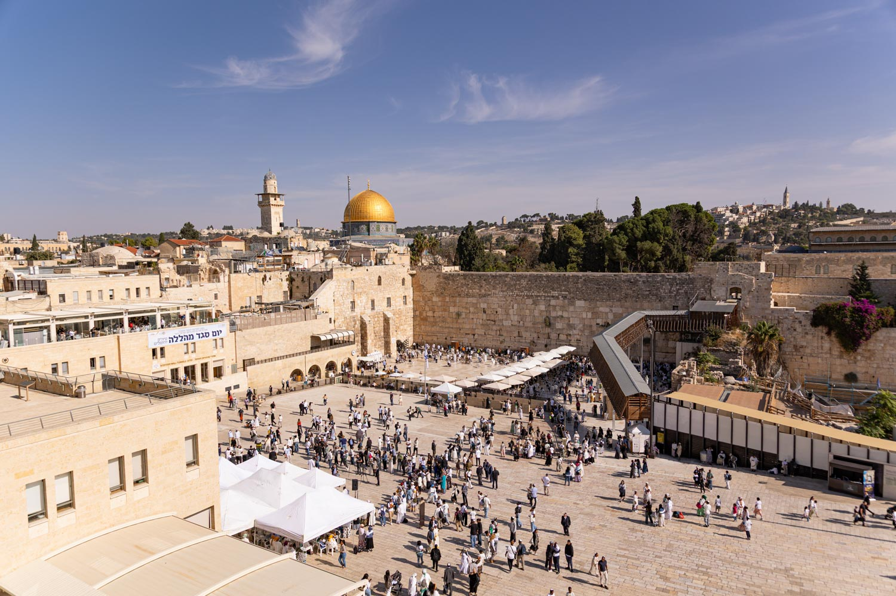
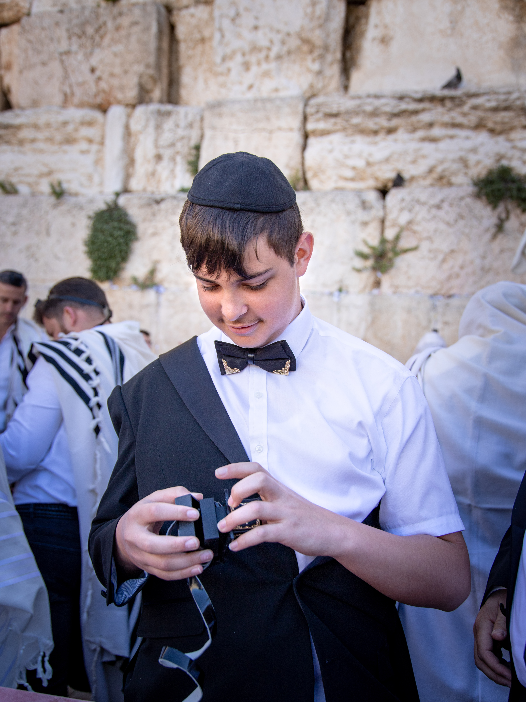
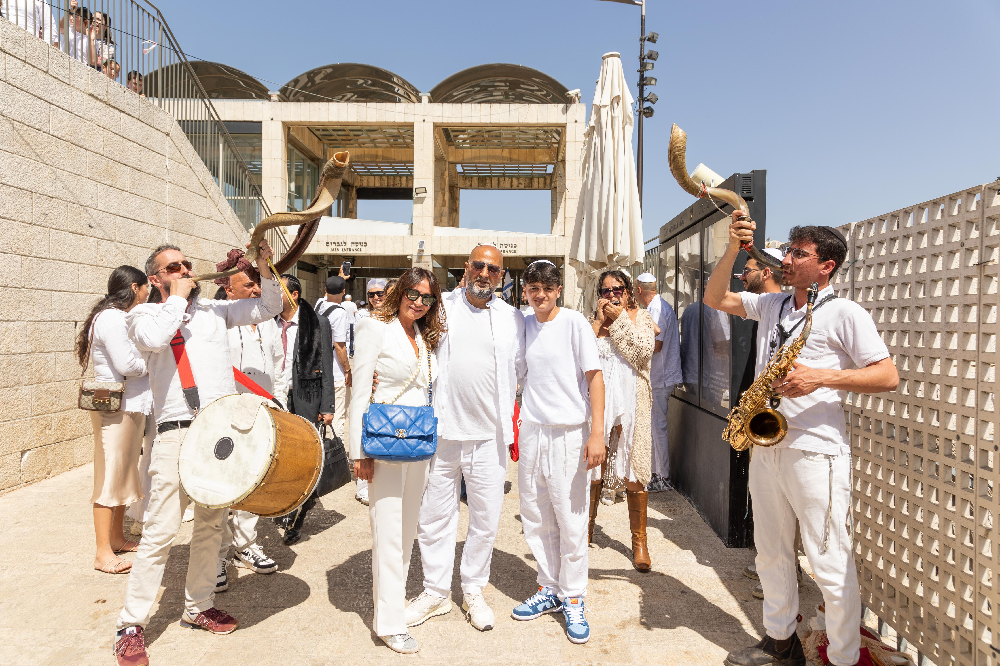
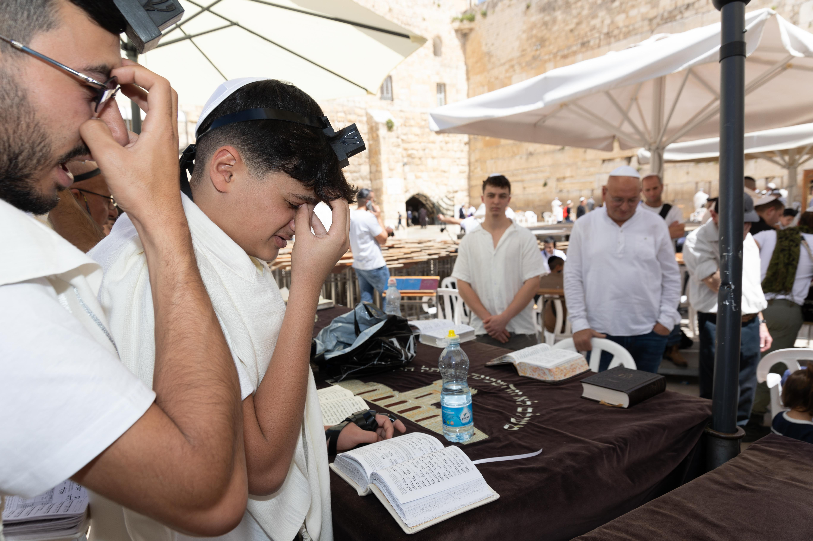
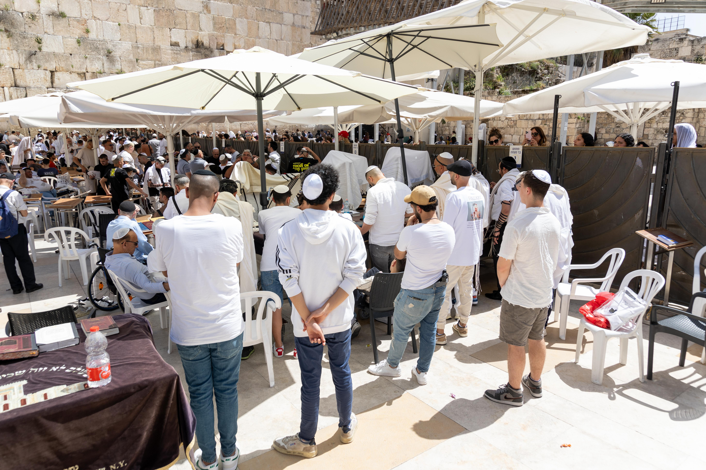
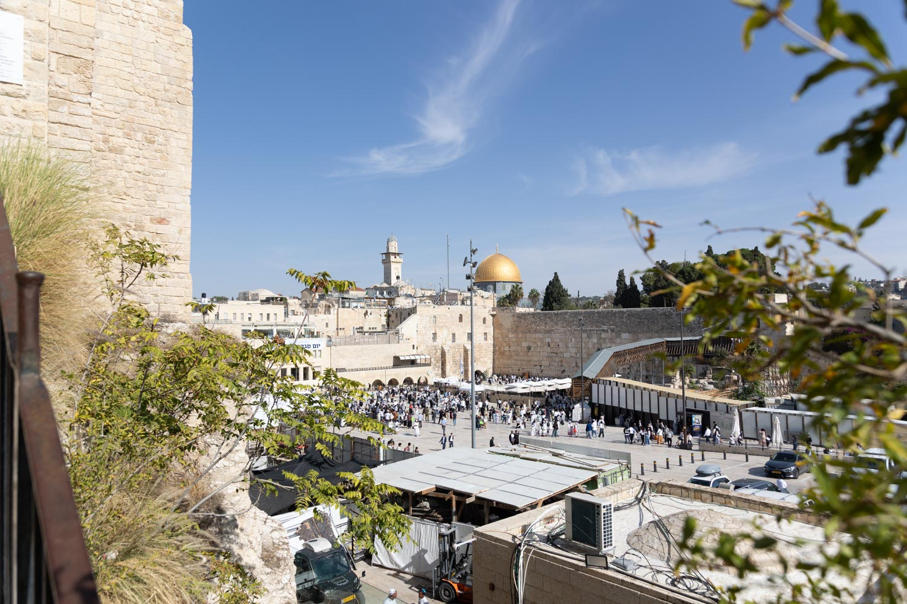
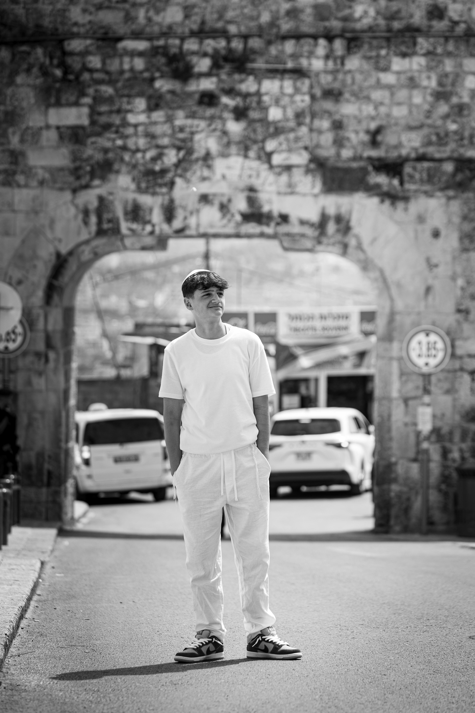
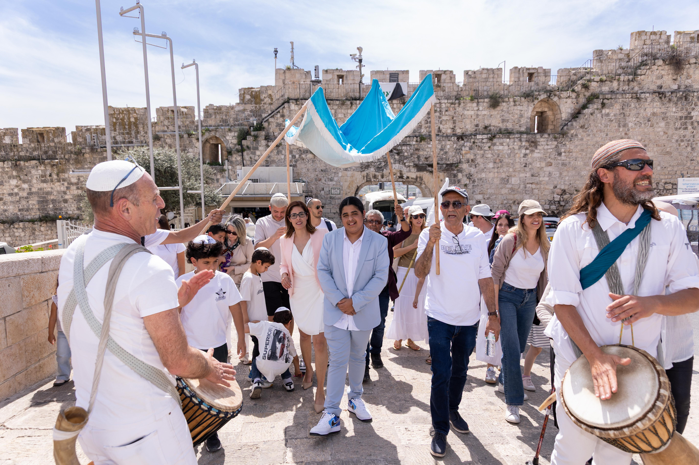
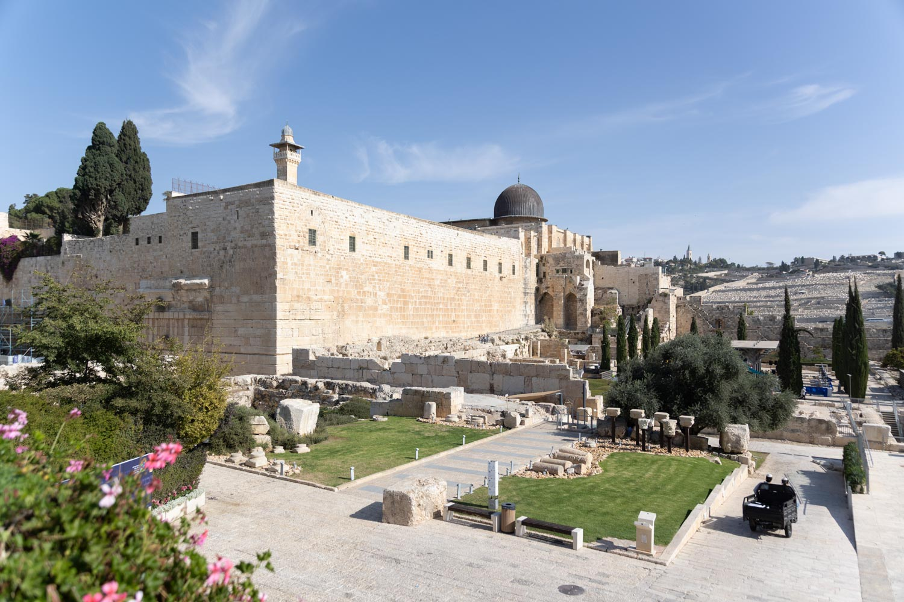
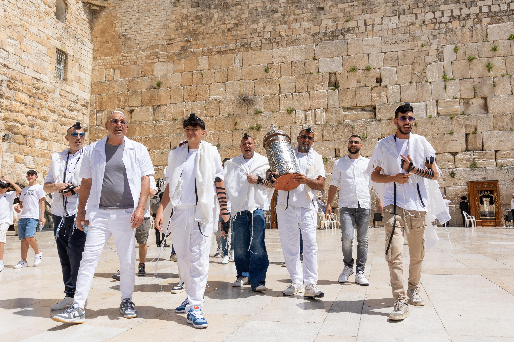
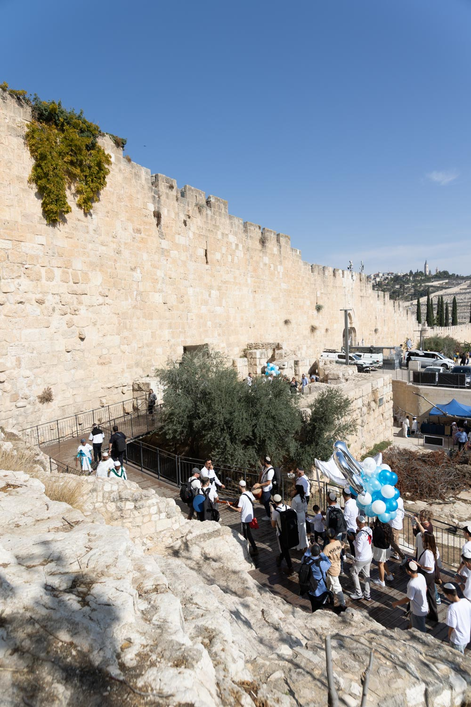
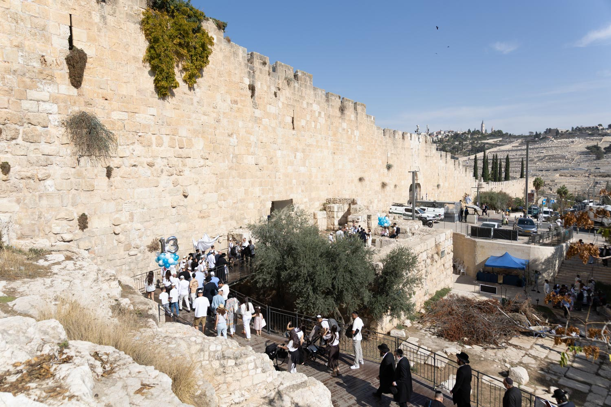
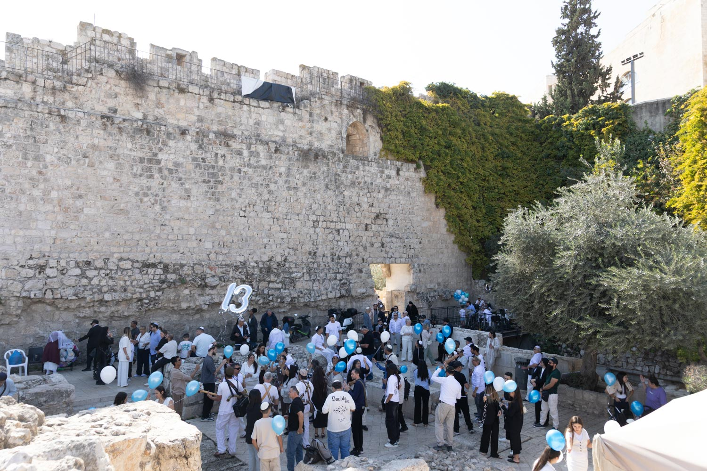